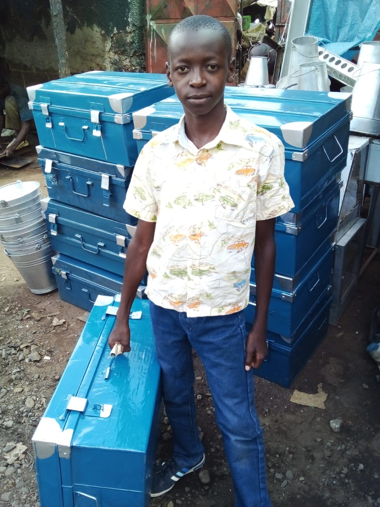

Grace Foundation is a community-based organization committed to addressing poverty by empowering vulnerable women and children through education, economic support, and access to clean water. Our work focuses on creating lasting change in the communities we serve. ▷ know more
Grace Mori, the beloved founder and patron of Grace Foundation, dedicated her life to empowering vulnerable women and children in her community. Her selfless acts and unwavering commitment continue to inspire our mission.
Our programs are designed to address the root causes of poverty and create lasting change in the communities we serve. We focus on women’s economic empowerment, education for children, and access to clean water.
This is the story of Obama, a special child who has overcome incredible challenges. His story represents the spirit of Grace Foundation, providing hope, education, and a bright future for those most in need. Obama's determination, with support from the foundation, has led him to excel in school and become a role model for others.Read More
"Grace Foundation has changed my life. With the support I received, I was able to start my own business and support my family." – Sarah M.
"Thanks to the Grace Foundation, my children are now in school and have access to clean water." – Mary K.
We are grateful for the support of our partners who help us achieve our mission. Together, we are making a difference in the lives of vulnerable. Currently we have individual supporters and anonymous donors
There are many ways to get involved with Grace Foundation and support our work. Whether you want to volunteer, donate, or spread the word, we appreciate your support.
Your donation can make a big difference in the lives of vulnerable children and women in Kenya. We appreciate your support.